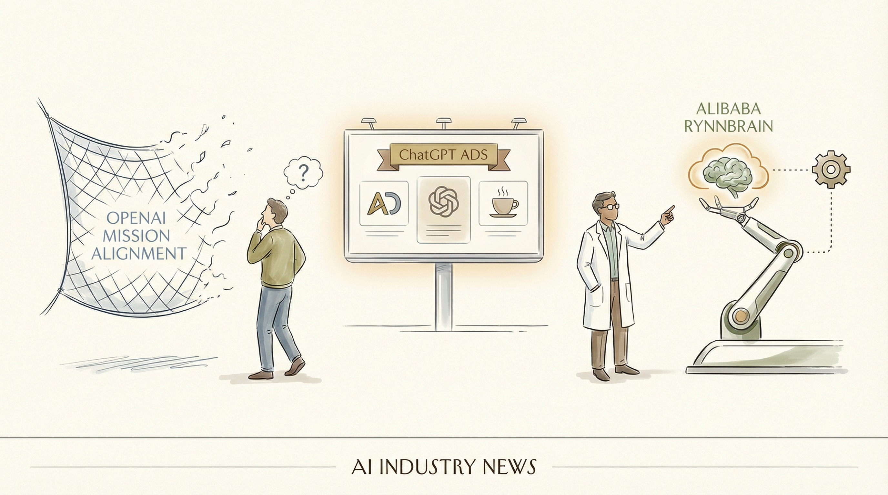

OpenAI解散了关注安全与可信AI发展的团队。
两克伴AIGC日报
2026-02-12 星期四

本期关注：OpenAI解散安全团队、ChatGPT引入广告，中国GLM 5.0与MiniMax 2.5发布开启AI代理竞争时代，同时AI助手安全性挑战凸显，行业商业化与技术安全并行发展。
📰 行业动态
多家公司宣布将在ChatGPT内投放广告。
阿里巴巴发布RynnBrain AI模型，用于机器人。
🔥 今日焦点
近日，GLM 5.0和MiniMax 2.5两款AI模型相继发布，标志着中国AI领域迈入“代理战争”时代。GLM 5.0专注于提升推理和编码能力，而MiniMax 2.5则强调任务分解和长时间执行。这一变化意味着AI竞争焦点从“谁写出的答案更好”转向“谁能够真正完成任务”。
此次发布的两款模型在功能上超越了简单的聊天，转向了代理式的工作流程。GLM 5.0和MiniMax 2.5的问世，对AI领域具有重要意义。一方面，它们将推动AI技术向更高级别的应用发展；另一方面，也将促进AI领域的竞争和创新。
标题：安全AI助手的可能性探讨
核心内容概述：本文由Grace Huckins撰写，探讨了AI助手的安全性问题。文章指出，尽管AI在聊天窗口内可能存在错误和不良行为，但当它们获得与外界互动的工具，如网络浏览器和电子邮件地址时，这些错误的后果将变得更加严重。
近日，在Reddit上，作者u/ResearchCrafty1804宣布推出GLM-5模型。该模型旨在解决复杂系统工程和长期目标驱动的智能任务。在人工智能领域，模型规模的扩大是提升通用人工智能（AGI）智能效率的重要途径。与GLM-4.5相比，GLM-5的参数规模从355B（32B活跃）提升至744B（40B活跃），预训练数据也从23T增至28.5T tokens。此外，GLM-5还集成了DeepSeek稀疏注意力（DSA）技术，在保持长上下文能力的同时，显著降低了部署成本。这一突破性进展将对AI领域产生深远影响，推动AGI的发展和应用。更多详情可参考官方博客（https://z.ai/blog/glm-5）、Hugging Face（https://huggingface.co/zai-org/GLM-5）和GitHub（https://github.com/zai-org/GLM-5）。
📚 深度长文
本文探讨了《纽约时报》如何利用定制AI工具追踪“男性主义圈”并深入报道相关议题。文章指出，该工具名为“男性主义报告”，通过内部构建的大型语言模型（LLMs）自动转录和总结数十个播客的新内容。这一AI工具在报道中发挥了关键作用，为记者提供了快速、清晰的信号，揭示了保守媒体对政府的反对态度。文章强调，该工具的使用直接关联到对相关议题的深入报道，体现了《纽约时报》在利用AI技术进行新闻追踪和报道方面的创新实践。对于AI从业者而言，本文不仅揭示了AI在新闻领域的应用潜力，还提供了关于如何利用AI工具进行深度报道的独特见解。
---
本文深入探讨了Claude Opus 4.6与GPT-5.3 Codex在真实代码场景下的表现。作者Claire Vo通过实际操作，将两种AI模型应用于代码生成，并在五天内成功提交了93,000行代码，共计44个Pull Request。文章核心观点是对比两种AI模型在代码生成方面的实际效果，并得出结论。关键论据包括：实际代码生成量、提交的Pull Request数量以及作者对两种模型的个人评价。阅读本文，AI从业者可以了解到不同AI模型在代码生成领域的实际应用效果，以及如何根据具体需求选择合适的模型。文章深度和独特见解体现在对真实代码场景的深入分析，为AI在代码生成领域的应用提供了有价值的参考。
---
本文深入探讨了OpenAI API中Skill的应用与集成。文章核心观点在于，OpenAI API的Skill功能正逐渐成为其重要组成部分，并可通过shell工具直接使用。作者详细介绍了如何将Skill打包并上传，以及如何通过JSON请求以inline base64编码的方式发送Skill，极大地简化了使用流程。
文章以实际代码示例为关键论据，展示了如何利用OpenAI API的Skill功能，并通过优化接口设计，提高了API的易用性和效率。这一深度见解对于AI从业者而言极具价值，不仅有助于理解OpenAI API的Skill功能，还能为实际应用提供有益的参考。
📄 重点论文
**核心贡献**: 提出了一种名为Agent World Model (AWM)的合成环境生成管道，通过该管道可以生成覆盖日常场景的1000个环境，使智能体能够与丰富的工具集进行交互。
**与AI Agent的关联**: 为智能体强化学习提供了大量多样化的合成环境，有助于提升智能体的多轮交互和工具使用能力，对智能体研究具有实际价值。
🛠️ 产品推荐
Show HN: agent alcove – Claude, GPT, and Gemini辩论平台，汇聚了Claude、GPT、Gemini等顶级AI模型，在多个论坛展开激烈辩论。该平台旨在为用户提供一个深入了解AI技术发展和应用场景的窗口，通过AI辩论，激发创新思维，推动AI技术的进步。平台以AI为核心，通过辩论形式，解决技术从业者对AI技术的疑惑，助力行业人士提升AI技术认知和应用能力。
---
Show HN: Send Claude Code tasks to the Batch API at 50% off是一款基于Anthropic API的软件设计及基础设施工作助手。该产品允许用户将Claude Code中的任务直接发送至Batch API，以降低API使用成本。通过批量处理，用户可以节省高达50%的费用，同时保持与Anthropic API相同的高质量响应。这款产品特别适合需要频繁进行软件设计、代码审查和文档编写的技术从业者，有效解决API使用成本高昂的问题。
---
CodeMoot是一款连接Claude Code和Codex CLI的桥梁工具。它通过整合这两个强大的代码生成工具，为用户提供便捷的代码生成和编辑体验。CodeMoot的核心功能是实现不同代码生成工具之间的无缝切换和协同工作，有效提升开发效率。对于技术从业者而言，CodeMoot能够解决在多个代码生成工具间切换时产生的重复操作和效率低下的问题，从而提高工作效率，降低开发成本。此外，CodeMoot的AI能力在代码生成方面具有创新点，能够为用户提供更加智能、高效的代码生成体验。